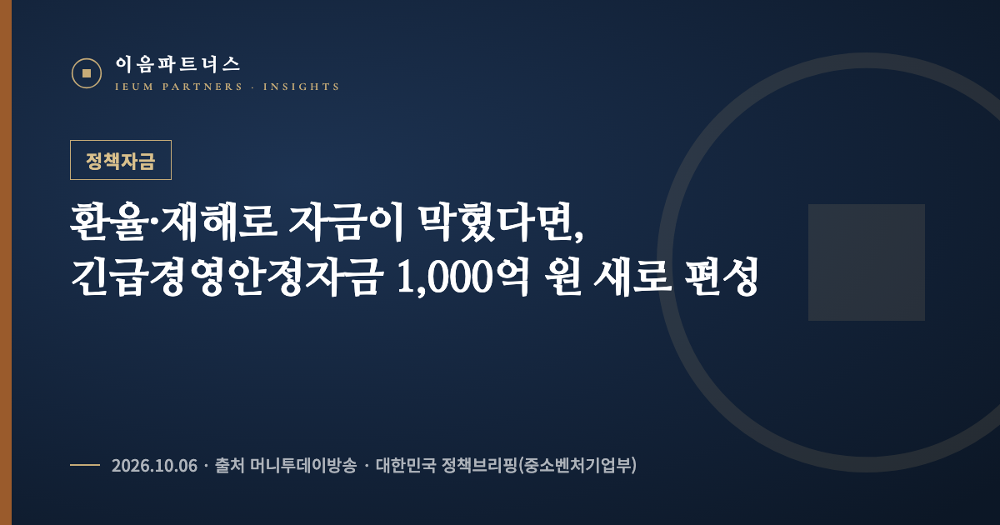

환율·재해로 자금이 막혔다면, 긴급경영안정자금 1,000억 원 새로 편성

환율이 크게 움직이거나 집중호우 같은 재해를 겪으면, 일감이 있어도 당장 돌릴 자금이 막히는 회사가 생깁니다. 중소벤처기업진흥공단(이하 중진공)은 2026년 10월 6일 이런 기업을 위한 긴급경영안정자금 1,000억 원을 새로 편성했다고 밝혔습니다. 이 글에서는 이번 자금의 대출 조건과 대상, 신청 전에 확인할 점을 정리합니다.
긴급경영안정자금은 일시적인 경영 애로를 겪는 중소기업의 정상화를 돕는 정책자금이라, 피해가 언제 얼마나 생겼는지를 보여 주는 자료가 중요합니다. 우리 회사가 해당하는지, 어떤 자료부터 모아야 할지 궁금하다면 카카오톡 채널 이음파트너스에서 함께 정리해 볼 수 있습니다.
무엇이 새로 나왔나
이번 자금은 대외 불확실성이 이어지면서 환율 피해를 입은 기업과 자연재난 등으로 피해를 입은 중소기업을 돕기 위해 마련됐습니다. 중진공은 “위기 상황에 놓인 중소기업이 어려움을 딛고 다시 일어설 수 있도록” 정책자금을 지원하겠다고 밝혔습니다(머니투데이방송).
| 구분 | 내용 |
|---|---|
| 규모 | 1,000억 원 신규 편성 |
| 대출한도 | 기업당 10억 원 이내 |
| 상환 방식 | 2년 거치 후 3년 분할 상환 |
| 금리(환율 피해기업) | 정책자금 기준금리(변동)에 0.5%p를 더해 적용 |
| 금리(특별재난지역) | 집중호우로 특별재난지역이 된 거제·통영 피해기업에 1.5% 고정금리 특례 |
| 문의 | 전국 34개 중진공 지역본·지부, 정책자금 안내 콜센터 |
거치(원금은 갚지 않고 이자만 내는 기간)가 2년이라, 당장의 상환 부담을 줄이면서 회복할 시간을 벌 수 있는 구조입니다. 거제·통영 피해기업이라면 금리가 고정된다는 점도 자금 계획을 세우는 데 도움이 됩니다.
원래 있던 긴급경영안정자금과는 무엇이 다른가
중소벤처기업부는 2025년 12월 22일 2026년 정책자금 운용계획을 발표하면서, 경영 애로를 겪는 기업을 위한 긴급경영안정자금 2,500억 원을 이미 편성했습니다. 보호무역 피해 기업을 위해 긴급경영안정자금 공급을 늘리겠다는 방향도 함께 밝혔습니다(대한민국 정책브리핑).
이번 1,000억 원은 그 위에 환율과 재해 피해를 겨냥해 새로 더한 몫입니다. 정책자금은 정해진 예산 안에서 운영되므로, 해당된다고 판단되면 상담 시기를 미루지 않는 편이 좋습니다.
신청 전에 짚어 볼 점
이 자금은 어려운 회사라면 누구나 받는 돈이 아니라, 환율 변동이나 재해로 경영에 지장이 생긴 기업을 위한 자금입니다. 매출·원가·자금 흐름에 실제로 어떤 영향이 있었는지 시점과 함께 설명할 수 있어야 하며, 구체적인 제출 서류와 요건은 중진공 공고로 확인해야 합니다.
신청은 회사가 직접 하고, 지원 여부와 금액은 각 기관 심사로 정해집니다. 기업당 10억 원은 최대 한도일 뿐이며, 실제 금액은 회사의 상황과 심사 결과에 따라 달라질 수 있습니다.
대표님이 지금 확인할 것
- 환율 변동이나 재해로 생긴 피해의 시점과 규모를 숫자로 정리해 두었는지
- 사업장이 특별재난지역(거제·통영)에 있어 고정금리 특례 대상인지
- 이미 받은 정책자금 잔액과 상환 일정을 놓고 추가 대출을 감당할 수 있는지
- 관할 중진공 지역본·지부나 정책자금 콜센터(1811-3655)에 상담을 예약했는지
참고한 자료
- 중진공, 긴급경영안정자금 1000억 원 신규 편성...환율 변동·재해 피해기업 지원 — 머니투데이방송 (2026.10.06)
- 내년 중소기업 정책자금 4조 4000억 원 공급…60% 이상 비수도권에 — 대한민국 정책브리핑(중소벤처기업부) (2025.12.22)
우리 회사가 이번 자금의 대상인지, 신청 전에 무엇을 준비해야 할지 막막하다면 카카오톡 채널 이음파트너스로 편하게 물어봐 주세요.
※ 이 글은 일반적인 정보 제공을 위한 것으로, 개별 사안은 세무사·노무사 등 전문가와 함께 확인하시기 바랍니다.